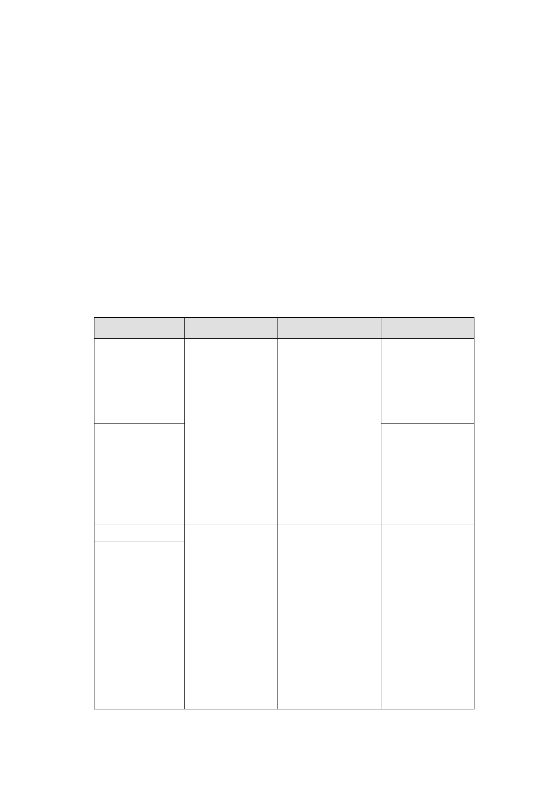

及延續中正紀念堂至永康商圈都市活動之委員建議，建請開發單
位納入後續再開發計畫擬訂考量」。
2.主要計畫復經內政部都市計畫委員會 100 年 8 月 23 日第 762 次會
議決議修正通過，決議(略以)：「......應俟臺北市都市計畫委員會
審定細部計畫後，再檢具主要計畫書、圖報請核定」。
(三)主要計畫範圍內，因中華電信及中華郵政公司所有土地將另案納
入臺北市電信用地及郵政用地通盤檢討案內辦理，市府爰就其餘
範圍，依都市計畫法第 22 條提出本細部計畫擬定案。
貳、公展細部計畫內容
（一）訂定土地使用計畫及分區使用管制內容
1.使用分區、使用強度及允許使用
使用分區
特定專用區（一）
特定專用區（二）
特定專用區（三）
特定專用區（四）
特定專用區（五）
使用強度
允許使用
備註
建蔽率及容積率 除部分組別不得使
依住三、住三之 用以及建築物之第 ※ 特 定 專 用 區
一規定辦理
一、二層限供商業 （二）區內有
※住三建蔽率不 及公共使用外，餘 公告登錄之歷
得超過 45％、容 比照臺北市土管自 史建築。
積 率 不 得 超 過 治條例商三辦理。
225％。
※住三之一建蔽
率 不 得 超 過 45
％、容積率不得超
過 300％。
建蔽率 45％，容 1.未來可作為本府 1. 特 定 專 用 區
積 公務機關、市政建 （四）、（五）為
率為 400％。
設或公營住宅籌備 本計畫變更回饋
基地。
之土地。
2.除部分組別不得 2. 特 定 專 用 區
使用以及建築物之 （四）、（五）區
第一、二層限供商 內有公告指定、
業及公共使用外， 登錄之古蹟與歷
餘比照臺北市土管 史建築。
自治條例商三辦
理。
-2-